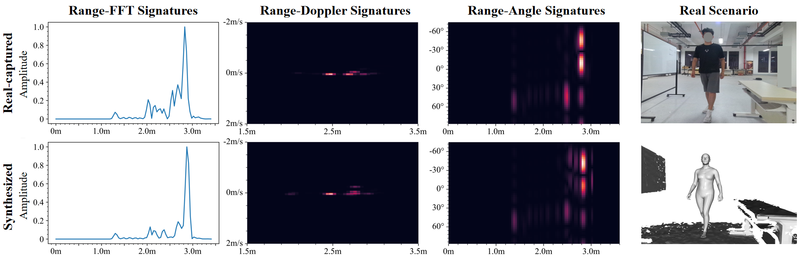
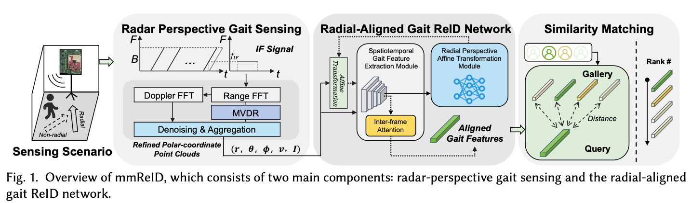
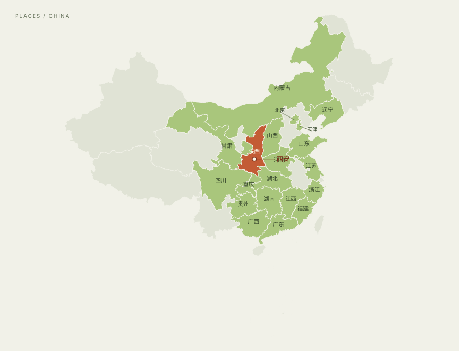

mmGen / SYSTEM OVERVIEW

一张快照 → 场景与人体建模 → 毫米波原始信号mmGen
One Snapshot is All You Need: A Generalized Method for mmWave Signal Generation
用一张快照重建感知场景，联合人体反射、环境反射与多径建模，生成毫米波原始信号，降低真实数据采集与标注的成本。
西安交通大学 · 计算机科学与技术学院
目前是博士研究生，师从丁菡教授，主要研究毫米波无线感知及泛化。对信号生成、人体感知和模型部署感兴趣，还在继续学习和探索。
西安，中国
mmGen / SYSTEM OVERVIEW

一张快照 → 场景与人体建模 → 毫米波原始信号One Snapshot is All You Need: A Generalized Method for mmWave Signal Generation
用一张快照重建感知场景，联合人体反射、环境反射与多径建模，生成毫米波原始信号，降低真实数据采集与标注的成本。
沿着 mmGen 继续探索信号生成与泛化，研究反射、衍射、多径和材质参数建模，让合成信号更接近真实环境。更多方法与结果将陆续分享。
Beyond Radial Limits: Recovering Direction-Invariant Walking Dynamics for Robust mmWave Radar Person Re-Identification
针对行走方向改变导致的步态特征偏差，通过径向视角对齐恢复方向不变的行走动态，实现更鲁棒的毫米波行人重识别。

We Can Hear You with mmWave Radar! An End-to-End Eavesdropping System
研究毫米波雷达捕捉的细微振动与语音之间的联系，通过端到端系统重建语音，探索无线信号的语音感知能力及其隐私风险。
mmWave-Aided Unified Speech Enhancement and Separation without Speaker Count Prior
融合毫米波感知与音频，在无需预先给定说话人数的条件下，统一处理语音增强与多人语音分离。
Active Domain Adaptation for mmWave-Based HAR via Rényi Entropy-Based Uncertainty Estimation
利用 Rényi 熵进行不确定性估计，通过主动域适应，研究毫米波人体活动识别在环境变化下的迁移问题。
缺血性卒中预警与辅助决策
参与国家科技重大专项中的患者行为感知研究与系统实现。
在项目中主要做系统部署与运维、医院对接和数据采集处理，也参与了部分步态评估模块。
获得博士研究生国家奖学金。
主持西安交通大学基础研究专项（自由探索学生类）课题，开展跨场景无线感知关键技术研究。
参与的发明专利“一种毫米波与图像融合的人体 3D 网格模型构建方法及系统”获授权，第三发明人。ZL 202310210533.1
全国大学生物联网设计竞赛：全国总决赛三等奖、西北赛区一等奖。
全国大学生物联网设计竞赛西北赛区一等奖；泛在智能感知技术创新应用大赛优胜奖。
此前还获得校级一等奖学金、优秀研究生干部等荣誉；本科期间获得校级二等奖学金。
家在西安，也一直在这里读书。平时喜欢阅读、看画、听音乐和打篮球。常读的书有马尔克斯的小说、《悉达多》和《三国演义》，喜欢的画家有梵高和莫奈。
本科时在品阁咖啡厅工作过两年，也参加过 E 维团队的电脑义诊。对不同学科的话题都挺好奇，欢迎交流。
以后想尝试游戏制作、运动辅助模型和穿戴设备，也希望有机会组织一次关注应用落地的无线感知交流活动。目前先继续做好博士阶段的研究。
740464911@qq.com ↗
西安HOME / XI’AN
家乡在陕西西安。国内去过一些地方，国外目前去过英国伦敦。
辽宁、内蒙古、北京、天津、山西、山东、河南、江苏、浙江、湖北、江西、福建、广东、湖南、贵州、广西、四川、重庆、甘肃。家乡：陕西西安。
欢迎邮件交流。
740464911@qq.com